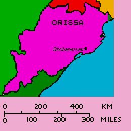

Welcome to Orissa -- A largely undiscovered beauty
Orissa
is a fascinating land on the east coast of
India
surrounded by the states of
West Bengal & Bihar on the north,
Andhra Pradesh on the south, Madhya Pradesh on the west,
and the Bay of Bengal on the east. Here is a map:

Orissa has many ancient and architecturally marvelous
temples,
historical monuments, beautiful beaches, wild life
sanctuaries and enchanting sceneries.
Orissa is an unspoilt, natural heaven still largely undiscovered by tourists.

Political history of Orissa
See here for an essay.
[Unrecovered image: http://www.cs.columbia.edu/~deba/orissa/pictures/gif/coming.gif]
Oriya Language & Literature
`Orissa' as a child writes in Oriya language:

Words such as "Orissi" and "Orissa" are pronounced as "Odissi" and "Odissa".
Click here for an evolving write-up.

Orissa, the land of temples
Among the most famous Oriya temples are Lingaraj , Mukteswara and Rajarani temples of Bhubaneswar . The magnificent Lingaraj temple, 147ft. high from the plinth, was built by Lalatendu Keshari of Somavamsi dynasty in 617-657 A.D. The Sun temple in Konark was constructed by the most powerful Ganga king, Narasingha Deb-I, in 1238-1264 A.D. The ancient, holy temple of Jagannath in Puri was initially built by Yajati Keshari of Keshari dynasty, but the present-day temple was rebuilt in the 12th century by Chodaganga Deb of Ganga dynasty. Some argue a successor, king Anangabhima Deb-III, completed the temple. Other well-known temples include Samaleswari in Sambalpur, Thakurani in Berhampur, and Chandi mandir of Cuttack. See a dancing, sculpted figurine from the Sun temple of Konark here.
[Unrecovered image: http://www.cs.columbia.edu/~deba/orissa/pictures/gif/coming.gif]
Rich Legacy Of An Ancient Culture
Handicrafts Of ORISSA: A Language In Timeless Harmony
Orissa is a veritable museum of India's sculptural and artistic heritage, and a place like no other, a glowing green jewel of a state. The artists of Orissa still live and work in remote tribal habitations, small villages, and traditional pilgrimage towns throughout the state. Entire communities are devoted to the making of bell-metal wares, the painting of brilliant Patta-chitra pictures, the etching of palm-leaf manuscripts, the casting of metal sculptures, the fashioning of silver jewellery, Filigree , the carving of stone, the working of wood, the stitching of applique, and, of course, the weaving of Orissa's spectacular, gorgeous Ikkat silks and cottons. These contemporary guardians of an ancient traditions can often be found in small houses set in lanes or villages devoted to their art form, welcoming visitors graciously, accepting, as usually innocently, their talent as a gift from God.
Orissan's Art and Handicraft: The Salient Features
(Click on any of the topic to access the document.....)
- Folk Painting: The Eternity on Temporal Medium
- Lacquer Work: The Nature on Lac
- Handloom: The Eternal Expression of an Indian Woman
- Silver Filigree: The Shine Life Craves For
- Dhokra Brass and Bell Metal: The Shining Ware
- Terrakota: The Burnt Beauty

Classical Music and Dance
Orissi is both a form of dance as well as a form of music. Top of this home page features a view of an Orissi dancer.
There are several other traditional and tribal dances of great skill and
artistic excellence, e.g., "Chhau Nacha".
Its beaches
The coast line of Orissa with the bay of Bengal has several outstanding beaches in Puri , Chandipur and Gopalpur . The beaches in Chandaneswar in Balasore and in Konark are also very attractive.Its Wild life
Orissa is rich in its varied wildlife. Here is a map of Orissa's wildlife parks. The Nandankanan Biological Park and the Chandaka elephant reserve are within 20 km of the state capital Bhubaneswar . Nandankanan is an open air zoo famous for its breeding of white tigers and the largest lion safari of India. The Chandaka elephant reserve is one of its kind in India where visitors can see elephants, sambar, bears, wild dogs, pea fowls and pythons in their natural surrounding. Elephants can also be seen in the Lakhari valley sanctuary in Ganjam .

Bhitarakanika sanctuary (near Chandabali in Balasore district) is the second largest mangrove forest in the country and a boat ride through the several small branches of the Brahmani delta is made exciting by the many crocodiles along the banks. Towards the end of the delta is the island of Dhamara where millions of turtles visit to lay eggs and can be seen in certain days.
Chilika lake (100 kms from Bhubaneswar) is the largest brackish water lake in the country which attracts large number of migratory birds including flamingoes, teals, bar headed geese, brahminy ducks, coots, pigeons, Shovellers, and white bellied sea eagle. Close to the lake mouth there is a large population of Gangetic dolphins.
Similipal tiger reserve (near Baripada) and Satkosia-Baisipalli sanctuary are two other important wild life sites in Orissa. Similipal tiger reserve is a 2750 sq km sal forest with beautiful waterfalls, and rich wild life that includes, tigers, elephants, leopards, cheetal, etc. Satkosia-Baisipalli sanctuary flanks the Mahanadi river and includes the Gharial breeding project of Tikerpara. A stay in Tikerpara and cruise along the 25 km long gorge with beautiful forests on either side is irresistible.
Historical Monuments
The Kalinga war between the Kalinga empire (in the BC's and which covers large part of present day Orissa) and the Mauryan emperor Ashoka was fought close to Bhubaneswar. After the war Ashoka renounced violence and spread the message of Buddhism. There are a few Buddhist remains and edicts in Orissa that date back to this period. Main among them are the edicts in Dhauli (in the outskirts of Bhubaneswar), the remains in Lalitgiri, Udaigiri and Ratnagiri, and an Ashokan rock edict in Jaugarh (near Chilika). Jain caves dating back to 2nd century BC can be found in Udaigiri and Khandagiri (now inside the city of Bhubaneswar). The excavated fortified city of Sishupalagarh near Bhubaneswar is believed by some to be the headquarters of emperor Kharavela.
Arts and Handicrafts
Pipili is well-known for its chanduas (canopies). Other forms of handicraft that have obtained wide acclaim are: Tarakasi (silver filigree) of Cuttack, Pata and Matha (a special type of clothes) from Berhampur, Sambalpuri Sari, brass & bell metal statuettes, and more.
Jagannath dham
The Jagannath temple in Puri is one of the four major religious centres of Hinduism and houses one of the four Sankaracharyas (somewhat equivalent to the Pope in Christianity) of the Hindu religion. See this for a view of the Car festival of Puri. From the temples of Orissa originated the Orissi dance--one of the premier school of dance in India.
Rivers
Mahanadi is the largest river streaming through Orissa and is about 890 Kilometers long.Great poets, artists, thinkers
Tribals of Orissa
Modern Orissa
For a somewhat outdated statistics on Orissa, click here .Orissa has several small cities in Bhubaneswar , Cuttack , Rourkela , Sambalpur and Berhampur . It has many educational and research institutes that includes hundreds of colleges, several universities, many professional institutions and a few research institutes. Metropolitan Bhubaneswar and metropolitan Cuttack each have around half a million population. But their city limits are within 10 kms and is shrinking every day. Both Puri and Konark are within 60 kms of Bhubaneswar, and the triangle of Puri, Konark and Bhubaneswar with half the major places of interest in Orissa is referred to as the golden triangle of Orissa.
The industrial resources of Orissa are considerable and only the state of Bihar has larger resources that Orissa in India. The industries are mostly based on minerals. Rourkela and Anugul-Nalconagar are the major industrial cities of Orissa. Rourkela has one of the major steel plants of India and Nalconagar has Asia's largest aluminum plant. Other industrial towns are Rajgangpur, Belpahar, Sunabeda, Talcher, Chowduar, Koraput, Jeypur, Brajarajnagar, Mancheswar (outskirts of Bhubaneswar) etc. Paradeep is the only modern port in Orissa. Hirakud dam (near Burla-Sambalpur) on the Mahanadi river is the fourth longest dam in the world.
Bhubaneswar is the major transportation hub in Orissa with an airport with daily flights to New Delhi, Calcutta and Bombay. It is also connected by air to Hyderabad, Raipur (in Madhya Pradesh) and Banaras(in Uttar Pradesh). The South eastern railway enters the state of Orissa about 60 Kms north of Balasore and passes through, Jajpur Road (Bus hub to Keonjhar, Jajpur and others), Cuttack, Bhubaneswar, a branch line to Puri, Chattrapur (near Chilika) and Berhampur. The above mentioned route connects Calcutta and points in the north east to the cities in the south (Madras, Hyderabad, Trivendrum, Bangalore etc). Bhubaneswar has 3 daily express trains (Utkal, Neelachal, and ??) to Delhi, a weekly Rajdhani to Delhi, a daily express train to Bombay (Konark), several daily trains to Calcutta (Puri express, Dhauli, Jagannath, East Coast, Madras mail etc), and has daily express trains to Madras (Coromondel, Madras Mail) and Hyderabad (East Coast, Konark). Inside the state Cuttack is the main hub for buses to different parts of the state. Rourkela has a small airport.
The Orissa Tourism development corp was established in early 1970s. Its office in Bhubaneswar is at 5, Jayadev nagar, phone 011-91-674-50099, in New Delhi is at B4 Baba Kharagsingh Marg (telephone 011-91-11-344580) near Connaught Place, in Calcutta is at 55 Lenin sarani (telephone 011-91-33-414 3653) near Esplanade, and in Madras is at 838 Anna Salai (telephone 011-91-44-834 090).
Oriya Contacts in North America

ORNET
SEEDS
Places of Tourist interest in Orissa (by district) :
(There may be some inconsistency as new districts were recently carved out of older ones.)- Bolangir
- Balasore
- Cuttack
- Dhenkanal
- Gajapati
- Ganjam
- Kalahandi
- Keonjhar
- Koraput
- Malkangiri
- Mayurbhanj
- Nawarangpur
- Phulbani
- Puri
- Raygada
- Sambalpur
- Sundergarh
Educational centers of Orissa :
- Bhubaneswar
- Cuttack
- Puri
- Rourkela
- Burla-Sambalpur
- Berhampur
- Sarang-Talcher
- Other centers of the land
Some references may be found here.
Many images used are accessible here: [Unrecovered image: http://www.cs.utexas.edu/users/darshan/SEEDS/orissa/omoutline.gif]
The information on Orissa is clearly incomplete. If you wish to provide new, relevant material or enrich the existing ones, please do consider writing an html, postscript, or text document on any of the various topics that are incomplete. You may preferably store those documents on your local ftp, gopher or WWW server, and provide me the address (link) to include, or email me the document itself.
I am hoping, at some near future, one of you will take the primary role in maintaining this wonderful stuff on Orissa.
I see that scores of people all over the world are accessing this page daily. I am sure there are some of you who can take the job of snazzing this page up, given the host of image/icon/colorbar libraries now availbale freely. Drop me a line..
Credits to contributors. Copyright. Disclaimer. Other Web sites of Interest.

(darshan@cs.utexas.edu)
Last Modified: March 7, 1995.